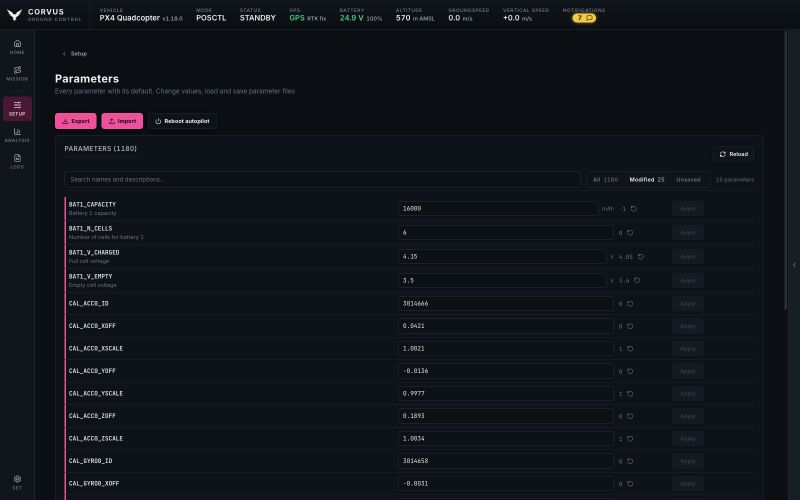
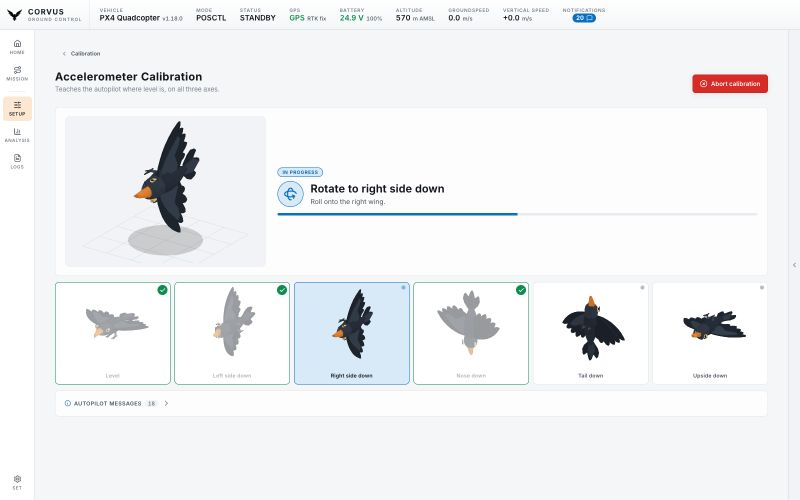

Set up
Parameters and calibration
The parameter editor shows every value on the aircraft beside its firmware default. The calibration page walks through each sensor with the aircraft drawn in the position the autopilot is asking for.


Loading the parameters
The full parameter set is downloaded only when you open this page, with a live progress bar. Nothing else in Corvus waits on it, which is why the rest of the app is ready in seconds (see Ready in seconds).
Editing
Edit any value and it is written to the aircraft. A write counts only when the aircraft confirms it, and writes are refused while armed. A value the aircraft rejected is never shown as applied.
Corvus never writes a parameter the connected firmware does not have. The firmware version is read when the aircraft connects, and the matching parameter set is used from then on.
Defaults and the Modified view
Corvus reads each parameter's default from the vehicle over MAVLink FTP; on PX4 it gets the description, unit and list of allowed values as well. So the list has:
- a Default column,
- a one click reset per row,
- and a Modified view with only what differs from the firmware, which is usually the short list you actually care about.
Whether Corvus keeps a copy of each PX4 firmware's parameter descriptions on this computer, so they are there without asking the aircraft again, is an option under Settings.
Import and export
Export and Import read and write three formats:
| Format | Extension | Written by |
|---|---|---|
| QGroundControl | .params | QGroundControl |
| Mission Planner | .param | Mission Planner |
| Corvus | .json | Corvus |
An export can hold every value or only the changed ones. After an import the
list shows the values it wrote. Exports go to ~/.corvus/params
unless you choose another folder under Settings,
Files.
Rebooting the autopilot
Some settings are only read when the autopilot starts: the airframe, a sensor driver, a serial port, the output protocol. An accelerometer or compass calibration also takes effect after a restart. The Parameters page, and any calibration that needs it, offer the reboot. It asks first and is refused while armed.
Sensor calibration


A guided wizard for the compass, gyroscope, accelerometer, level horizon, airspeed sensor and barometer.
- The aircraft is drawn in the position the autopilot is asking for.
- Each orientation is ticked off as the autopilot accepts it.
- The autopilot's own messages run underneath.
- A calibration in progress can be cancelled on the vehicle.
Why the positions are drawn
PX4 names the six accelerometer positions in its own order and its own words, and it names the side facing down, so "up" means upside down. Drawing each one removes the translation step: hold the aircraft the way the bird on screen is held.
PX4 and ArduPilot
PX4 recognises each position by itself. ArduPilot asks to be told, so on an ArduPilot aircraft a confirm button appears under the figure and the calibration waits for it. The compass calibration is also started differently on the two stacks; Corvus sends the right command for the one connected.
Board rotation
Above the calibrations sits the flight controller's rotation on the airframe, because every accelerometer and compass calibration is measured through it. Change it and the page offers the reboot and names the calibrations you now have to repeat.